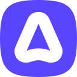
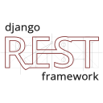
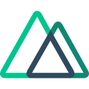
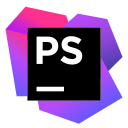
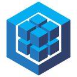
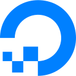

Servicios backend
APIs REST, reglas de negocio, documentación y mantenimiento de servicios con Node.js, NestJS y PHP/Laravel.
 Moisés EscobarBackend Engineer
Moisés EscobarBackend Engineer
Backend · Integraciones · Datos
Construyo soluciones que conectan sistemas y datos.
Desarrollo APIs e integraciones empresariales que automatizan procesos y mantienen la consistencia de la información. Más de 6 años de experiencia en desarrollo backend e ingeniería de datos.
Node.js · TypeScript · NestJS · PHP/Laravel · SQL
Software que resuelve problemas.
Integraciones que sostienen la operación.
Un poco de contexto
Soy Ingeniero en Desarrollo de Software titulado, especializado en backend, integración de sistemas empresariales e ingeniería de datos.
He trabajado con APIs REST, sincronización de información, automatización de operaciones y procesamiento de datos en sectores como turismo, retail, autopistas y servicios.
Me interesa comprender el problema de negocio, evaluar alternativas y construir soluciones seguras, mantenibles y capaces de evolucionar. Combino desarrollo de software, análisis y colaboración técnica para llevar las soluciones hasta su operación.
APIs REST, reglas de negocio, documentación y mantenimiento de servicios con Node.js, NestJS y PHP/Laravel.
Conexión de plataformas, sincronizaciones incrementales y por lotes, autenticación y control de acceso.
Modelado, SQL, pipelines ETL/ELT y revisión de calidad e integridad de datos en entornos cloud.
Experiencia profesional
Backend, plataformas empresariales y datos. Cada etapa suma una perspectiva distinta.
— Presente
Remoto
HOSTECH
Herramientas: Swagger/OpenAPI, Postman, GitHub, Bitbucket, Jira y pruebas unitarias.
Node.js · NestJS · TypeScript · Auth0 · PostgreSQL · Microsoft Fabric
—
Querétaro · Tiempo completo
2BCORE · Proyectos para Soriana
Entorno adicional: Cloud SQL, Cloud Storage, IAM, Cloud Logging, App Engine, Compute Engine, Azure DevOps y Data Factory.
Node.js · Python · MongoDB · BigQuery · Airflow · Google Cloud
—
Querétaro
GETIT Company
Entorno: PHP, Laravel, JavaScript, SQL, MySQL, SQL Server, PostgreSQL, Angular, jQuery, HTML/CSS, GitHub, Bitbucket, Jira y Trello.
PHP · Laravel · JavaScript · MySQL · SQL Server
—
Proyectos independientes
Freelancer
Colaboraciones por proyecto, algunas en paralelo con otros puestos.
Entorno: AdonisJS, Laravel, PHP, TypeScript, Angular, Ionic, SQL, PostgreSQL, MySQL, SQL Server, AWS, WHM y GitHub.
AdonisJS · PHP · OpenPay · PayPal · SQL
—
Querétaro
Integración de Energía
Lideré el desarrollo de un sistema de gestión y visualización de proyectos: definición de alcance, requerimientos, arquitectura de capas con Laravel, pruebas, despliegue, documentación y capacitación. Coordiné entregas semanales e introduje control de versiones con GitHub.
Soporte remoto y presencial, gestión de cuentas y accesos, mantenimiento de CRM/ERP y colaboración en planificación de software y adopción de Scrum.
Entorno: Laravel, PHP, MySQL, JavaScript, HTML/CSS, Bootstrap, jQuery, GitHub, AdonisJS e Ionic.
Laravel · MySQL · JavaScript · CRM/ERP
Código Facilito
— · Tuxtla Gutiérrez
Colaboración en Facilito Talks, plataforma de eventos y charlas: modelos, migraciones y controladores para la gestión de eventos, configuración de librerías y control de versiones.
Ruby on Rails · SQL Server · GitHub
Appcender
— · Tuxtla Gutiérrez
Maquetación de una plataforma de cursos, cuestionarios interactivos, almacenamiento y extracción de sus datos e integración con el sistema web.
HTML · Bootstrap · SQL Server · GitHub
Proyectos seleccionados
Ámbitos de trabajo basados en mi experiencia profesional, con el alcance de mi participación.
HOSTECH · Integraciones
NestJS · TypeScript · Auth0 · SQL
Ver experiencia relacionada ↗2BCORE / Soriana · Datos
Python · BigQuery · Airflow · Cloud Run
Ver experiencia relacionada ↗Independiente · Pagos
PHP · APIs REST · OpenPay · PayPal
Ver experiencia relacionada ↗Tecnologías y herramientas
Mi especialidad es backend, integraciones y datos. Estas son las tecnologías y herramientas que forman parte de mi trayectoria, incluidas las de proyectos anteriores y experiencia complementaria.

AdonisJS
Django REST
Nuxt
PhpStorm
Sequelize
DigitalOceanEn datos y cloud también trabajo con procesos ETL/ELT, Cloud Run, Cloud Functions, Cloud SQL, Composer y Data Fusion. Para análisis, documentación y revisión asistida de código utilizo Codex y Claude Code. Exploro continuamente nuevos modelos de inteligencia artificial y amplío mis conocimientos en orquestación de agentes.
Formación e idiomas
Universidad Politécnica de Chiapas
2016 — 2020 · Titulado
Suchiapa, Chiapas, México
Español: nativo
Inglés:
técnico
Pensamiento analítico, resolución de problemas, comunicación técnica y gestión de prioridades.
Siguiente conversación
Si tu equipo necesita conectar sistemas, desarrollar servicios backend o mejorar sus procesos de datos, será un gusto conversar.
moises.e.mtz@gmail.comQuerétaro, México · Experiencia en colaboración remota